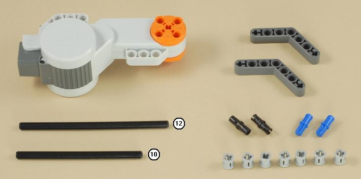
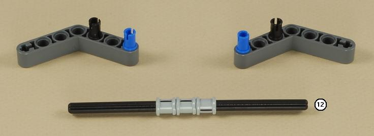
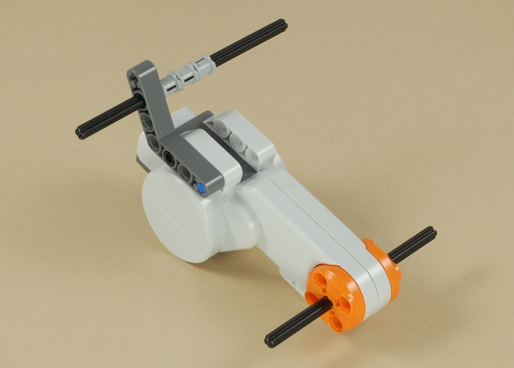
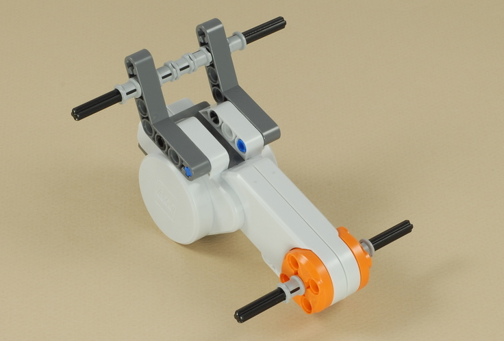
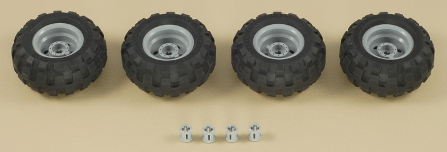
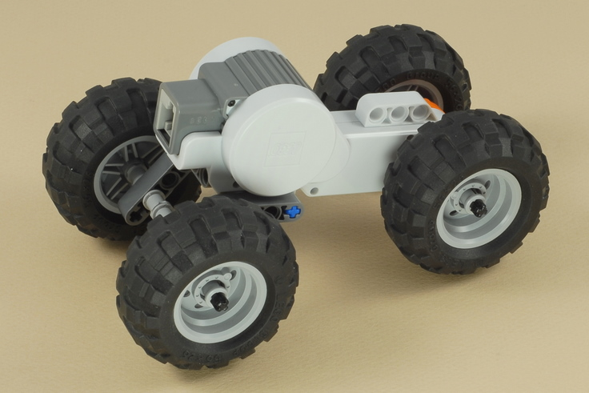
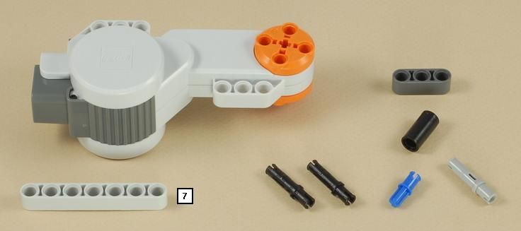
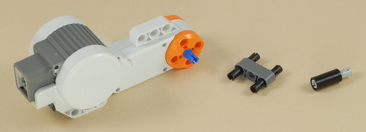
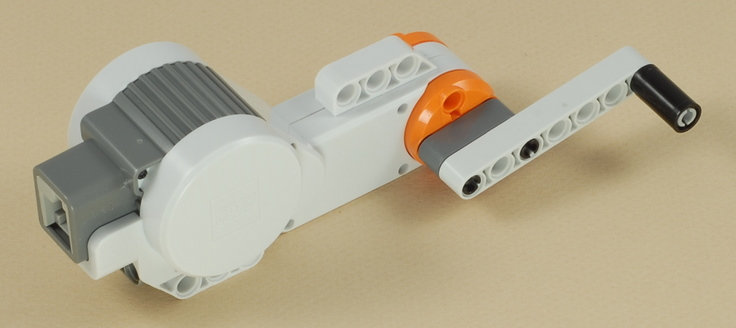
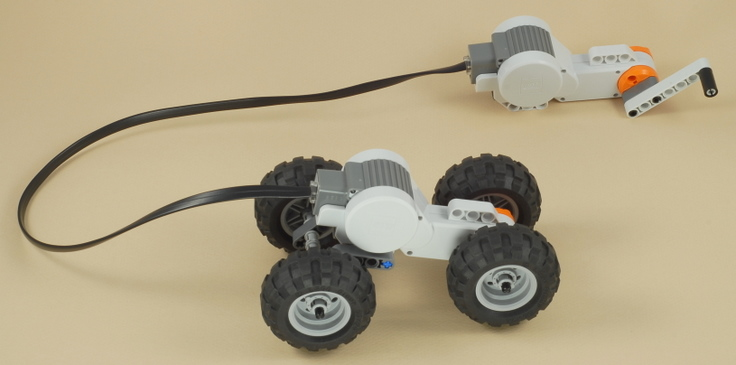

Fun Projects for your LEGO® MINDSTORMS® NXT!
|
|
Fun Projects for your LEGO® MINDSTORMS® NXT! |
| Hand Generator Car |
|

1



| Make sure that the gray bushings on the outside of free-spinning axle are not pushed on too tightly, so that the axle can spin easily. |

2


3



4
| Use one of the longest wires to connect the two motors together. |

Using the Generator Car
Hold the crank motor firmly in one hand and crank smoothly with the other hand. Important: Be smooth and gentle so that you don't stress the motor parts. Notice that if you crank the other direction, the car will change direction too. If you are left-handed, or if you want your car to go the other direction, you can switch the hand crank to the other side of the motor. |
Challenges
|
|
Copyright
©
2007-2009 by Dave Parker. All rights reserved. |